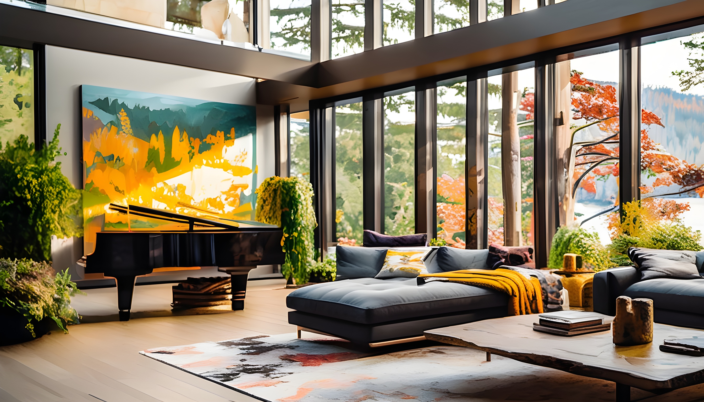
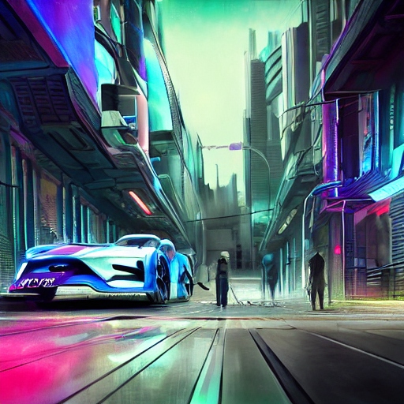
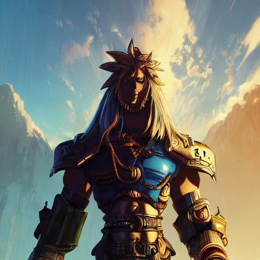
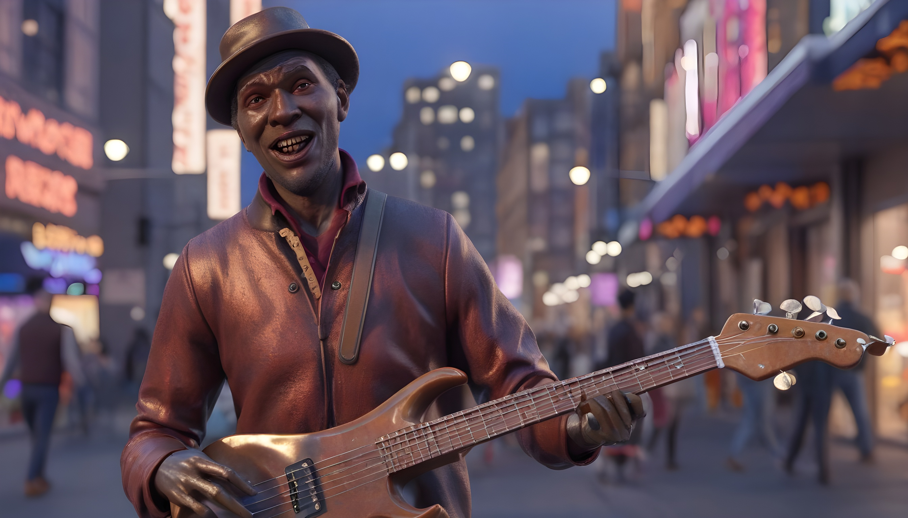

Convert your text into an image within a second using this
JavaScript-powered AI Image Generator tool.
We invest in the world’s potential

Frequently asked questions
Artificial intelligence, fundamentally, is a discipline that merges computer science with extensive datasets to address challenges. When applied to generative graphics, AI becomes a technology harnessing deep learning and neural networks to autonomously produce a wide spectrum of visuals. These AI-generated visuals encompass anything from straightforward logos to elaborate 3D images and videos, progressively gaining traction across various creative domains.
Compared to manual techniques, AI image generators have a lot of benefits, including improved efficiency and accuracy. AI-generated graphics can save time and money while providing more advanced aspects like adjustable colors, textures, and forms for more dynamic visuals. Additionally, AI-generated images are frequently more precise than traditional approaches and have the potential to develop content that fits intricate design criteria.
All you need to do is have an idea and type it into the form field above. Within 10-15 seconds, our AI picture generator will create a handful of images based on your text.
Our AI Image Generator has been meticulously designed to deliver a top-notch user experience for desktop users The tool is fully optimized to be used from your regular browser, offering the option to use the AI Image Generator from mobile browsers too. Don't be left wanting to give a shot to this cutting-edge technology that will transform forever the way you create breathtaking images forever!
As intriguing and forward-thinking as this new technology is, it is still fresh out of the box, and the world's regulations still need to catch up. Such laws will also vary depending on what country you are in. This means it is the responsibility of the user to check the usability of AI-generated images, perhaps seeking professional advice before reproducing, distributing, displaying, or performing the content. However, it is in our utmost interest to keep you informed of further developments.
Yes! We support over 20 languages, just like the rest of our website. Even if you enter a prompt in a language that is not officially supported our AI image generator will do its best to understand the text and give great results.